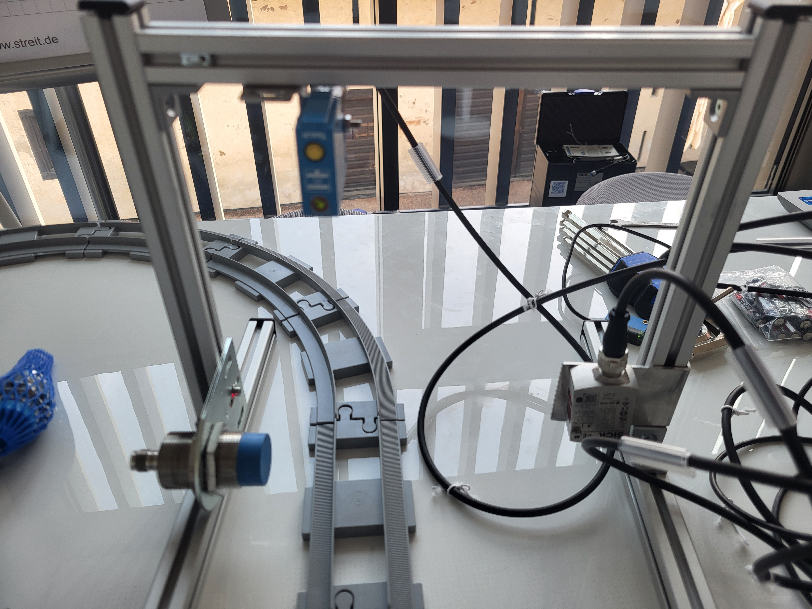
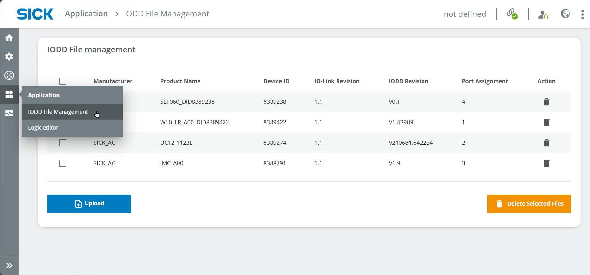

Smart Train Loop
| Short description | Required knowledge level | Estimated duration | Additional hardware and software requirements |
|---|---|---|---|
| Build a smart gate with different sensors that detect train waggons and load. | Advanced | 1-2 Hours | Mounting Kit Battery-powered train with tracks (Metallic) objects for train waggons optional: SLT |

In this project, the aim is to analyze a train running on a track loop. This is done with different sensors for presence detection, distance measurement and detection of metal objects. The results can be visualized with LEDs. The logic is created in the logic editor of the SIG300 network device.
Instruction
Setup
- Connect the 3 sensors and the LEDs and/or SLT to the SIG300.
Example connection setup
- SIG300 connected to PC via USB-C
- S1: W10
- S2: UC12
- S3: IMC30
- S4: SLT or LED yellow
- S5: LED green (initial status: blinking - as it's set to IO-Link)
- S6: LED red (initial status: blinking - as it's set to IO-Link)
- Think of a useful task for each sensor and create the setup by mounting the sensors to the mounting frame of the mounting kit using the supplied mounting brackets and tools.
Sensor information
Example setup and tasks
- UC12 : On top of frame to detect the train - keep in mind the max. measuring range
- W10: At the bottom of the other vertical bar to check if a waggon is loaded or not - keep in mind the minmum height of the objects on the waggon
- IMC30: At the bottom of one vertical bar to detect metallic objects on the waggon - keep in mind the maximum measuring distance



- Connect to the UI of the SIG300 as mentioned in Getting Started.
- Log in as Service, password: servicelevel and press Keep Default Password
IODD Files
- Select Application > IODD File Management and check if the IODDs for all sensors are uploaded.

- If the IODDs are missing, you can download them via the SICK website of the product in the Downloads > Software tab or on IODDfinder.com by entering the article number (W10: WTM10x-xx1611xxA00xVxxxxxxxxxx, UC12: 6077702, IMC30: 1079301, SLT060: 6075938).
- Assign the IODDs to the ports if it hasn't worked automatically yet.

Port Configuration
Sensors (e.g., W10 at S1):
You can use the sensors either as Digital Input, e.g. to trigger a Digital Output such as an LED, OR use the sensor as IO-Link device to communicate with other IO-Link devices such as the SLT.
- Go to Ports > Port 1, choose the Access rights tab and set the check marks as in the picture (Read process and service data and Sensor port configuration are relevant)

-
Switch to the tab Port 1 for the configuration as in the image described below (Assigned IODD, IO-Link, Device Identification Check Yes, Version V1.1 is relevant).
-
Note: Pin 4 is relevant for SLT (IO-Link); Pin 2 can be used for Digital Outputs only, e.g. LEDs (set sensor to Digital In)

- Switch to the IODD Viewer tab and select the measurement type at the top center. You can already read the measurement value at the very bottom center.
- To set a trigger at a specific measurement value, you can adjust the parameters. E.g. if you want the W10 to be triggered if the measurement value is bigger than 180 mm, find the Detection settings and set the Qint.1 SP1 sensing range to 180 mm and High active.

- Repeat these steps for all sensors. Note: every sensor looks a bit different in the IODD Viewer tab depending on functional principle and integrated functions/parameters.
Lamps (e.g., LED at S5)
Note: the SLT works same as a sensor in terms of Port configuration. For simple Digital Outputs (e.g. LEDs), please follow the instructions below.
- Go to Ports > Port 1, choose the Access rights tab and set the check marks as in the picture (Write process data is relevant).

- Switch to the tab Port 5 for the configuration. Set Pin 4 to Digital In. Depending on the Sensor port configuration in the access rights, you can toggle HI/LO to see if the LED is working.

- Repeat for all LEDs.
Logic Editor
To combine the measurement data from the sensors (digital in) and the LEDs (digital out), we use the Logic Editor. Note: You always need to click on Apply so that your changes in the Logic Editor take effect.
- Go to Application > Logic editor. Now create the logic for all sensors and LEDs according to the setup you defined in the beginning (e.g. make the green LED light up if a waggon is loaded). In the following steps, there are some examples you can follow.
Light up green LED if waggon is loaded
First, try out a direct connection between SIDI2 (Pin 2 of W10) and S5DO4 (Pin 4 of LED) by dragging the arrow from the block on the left to the one on the right side. Depending on the measurement value of the W10, the LED should now light up. You can use logic blocks to negate the result, e.g. Digital Logic > Gate > NOT in between the two blocks

Light up red LED if train is detected
- The UC12 can be used to detect any object in a specific area.
- Mount the UC12 according to the measuring range and the height of the train that should be detected. Use the IODD Viewer to see the measurement result and test a good position for the UC12.
- Adjust the trigger value by changing the value in IODD Viewer > SSC1: switch signal channel 1 > SP1 value and logic Low active Note: the value is not a milimeter value.

- Go the the Logic editor and connect S2I2 (Port 2 of UC12) and S6DO4 (Pin 4 of LED red). A NOT gate is not necessary as the logic is low active.

- Click on Apply and test if it works.
Light up yellow LED if a metal object is detected
- The IMC30 can be used to detect metal objects in a specific area.
- Mount the IMC30 according to the measuring range and the distance of the loaded metal objects to the gate. Use the IODD Viewer to see the measurement result and test a good position for the IMC30. There's no need to set a parameter.
- Go the the Logic editor and connect S3I2 (Port 2 of UC12) and S4DO4 (Pin 4 of LED yellow).

- Click on Apply and test if it works.
Make any LED light up for 3 seconds after the trigger
- Add a Delay block in the logic editor and set the OffDelay to 3000 (ms) to delay the lamp going out for 3 seconds

Reset
When you are finished with your project, you can press Clear in the Logic Editor to remove all blocks and connections. Please note that a Reset to factory settings will also delete the uploaded IODD files.